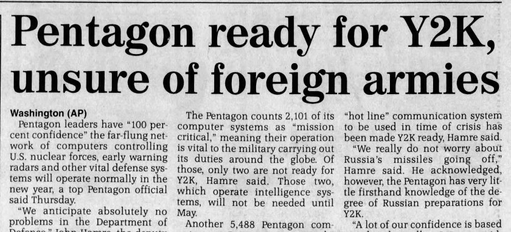
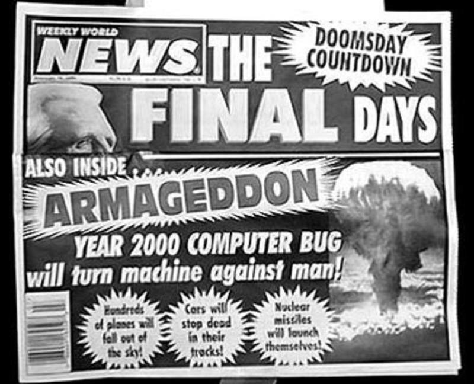
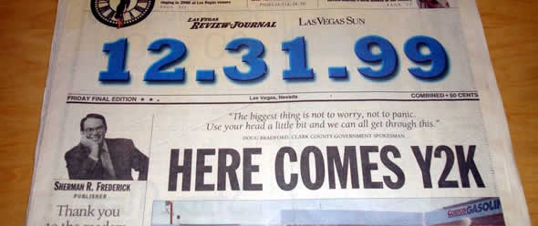

The company Best Buy encouraging people to turn off their computers before the year 2000 to avoid data corruptions.
Causes of the Y2K Bug
The Year 2000 bug, also known as the Y2K bug or the millennium bug, was caused by computer systems using six-digit date fields with only the last two digits of each year being stored. “[Six-digit date field usage had its origins in the] punched cards used in the first IBM 1401 computers introduced in 1959. The System 360 computers which replaced them . . . continued to use a six-digit date sequence. Then on November 1st 1968, the US Department of Commerce, National Bureau of Standards, issued Federal Information Processing Standards Publication 4 . . . which also specified the use of six-digit dates for all information exchange among federal agencies” (Hooper 2). Only the last two digits of each year being stored was problematic, as it meant that the year 2000 would be read as the year 1900, which caused many computer system problems. According to Gerner (qtd. in Hooper), “[Some causes of the Y2K bug include] lack of date standards . . . [;] computing resource constraints [such as] main memory, disk space and even punched card space . . . [; and] minimising user work load on keying [i.e., saving time when capturing data]” (3). Fixing the bug was not as easy as one may think, as “[if all application code was to be analysed and fixed for the Y2K bug,] an organisation will spend twice the annual cost it spends on maintaining its applications, and . . . there is no sustainable benefit from such a large expenditure” (Deloitte & Touche qtd. In Hooper 3). The Y2K bug was extremely expensive to fix, as it was present in multiple applications integrated in multiple organisations, and analysing and altering the code of each of these applications to fix the Y2K bug took much time.

An article title showing that the Pentagon is ready for dealing with the Y2K bug.
Effects of the Y2K Bug
The bug resulted in many computer applications misinterpreting the year 2000 as the year 1900. And according to Madden, some other applications “[did] not correctly identify 2000 as a leap year and risk[ed] failure on 29 February 2000 or 31 December 2000 (the 366th day)” (133). In 1998, Deloitte and Touche predicted that “10% to 20% of all businesses will fail and cease operations completely. Another 20% will survive the change in millennium but with serious difficulties” (qtd. in Hooper 8). News of the Y2K bug caused many to be fearful, as even businesses that fixed the Y2K bug might have technical difficulties because of partnerships with businesses with the Y2K bug in their technologies, and many businesses were predicted to fail due to the bug. Many thought that the bug could result in problems such as “program crashes or huge errors [,] [c]redit card payments [being] rejected with the explanation that the card expired nearly a century ago, insurance policies [being] erroneously canceled, [and] bank statements [showing] accounts to have accrued millions of dollars of interest, or to be millions of dollars overdrawn” (Hanson 68). The Y2K bug was not predicted to only have a major consequence on mainframe systems but embedded microchips too. According to Anderson, Y2K’s impact on “date-sensitive embedded microchips in safety and health equipment” (359) was a lesser-known effect of the bug. “[E]xposure monitoring equipment as well as various laboratory and work site test and safety systems [were] candidates for a Y2K problem” (Anderson 359). This was because embedded microchips within these systems contained “internal date functions” (Anderson 359). Thus, many people feared the collapse of widely used digital systems, with “a substantial number of Americans surveyed [in December 1998] [believing] there would be systems failures in banking (63%), air traffic (46%), food and water (37%), and emergency services (36%)” (Quigley 279). However, “By December 1999, anxiety levels dropped anywhere from one third . . . to a half” (Quigley 279). This could be a result of the extensive measures taken by businesses and the government to fix the Y2K problem, as these measures may have caused citizens to be reassured that Y2K was not going to cause many issues in society.

A fatalistic news article saying that the world will be doomed as soon as the current year becomes 2000 due to the Y2K bug.
Resolutions of the Y2K Bug
Robert W. "Bob" Bemer is said to be the first computer scientist to understand the significance of the Y2K problem (“Bob Bemer” 47). “[Bemer] warned President Nixon in 1970 and published his first article about the "millennium bug" in 1971 in the Honeywell Computer Journal” (“Bob Bemer” 47). Though Bemer’s warnings of Y2K were mostly disregarded at first, as the year 2000 grew closer, people started to panic. “[T]he research firm IDC [estimated that] $122bn were spent in the US alone to fix the problem” (“Bob Bemer 47). Altogether, all countries using digital technologies had to spend much of their budgets to fix the Y2K problem. Because of the many measures taken to prevent the Y2K bug, “by most accounts, Y2K was a nonevent” (Aspinwall 385). “[B]illions of dollars were spent by government and industry to update their software to prevent problems [caused by the Y2K bug]” (Aspinwall 385). The Y2K bug caused many people to realize that some tasks that seem simple to humans are in actuality extremely difficult for machines to reproduce. According to Hanson, ‘the notion that computers think like we do is an illusion” (69). To humans, it may be obvious when the year 1999 ends and the year 2000 begins, but for computers to discern centuries, it “requires massive replacements and the painstaking examination of billions of lines of code” (Hanson 70). Because of this realization, the Y2K bug was discovered and subsequently fixed in most software, resulting in a low number of digital problems following the start of the year 2000.

A newspaper informing readers about Y2K bug information.
Works Cited
Anderson, Vernon P. “Occupational Safety and Health Implications of the Millennium Bug: Embedded Microchips.” Applied Occupational & Environmental Hygiene, vol. 14, no. 6, June 1999, pp. 359–64. EBSCOhost, https://doi.org/10.1080/104732299302738. Accessed 30 Mar 2025.
Aspinwall, Lisa G., et al. “Expect the Best and Prepare for the Worst: Anticipatory Coping and Preparations for Y2K.” Motivation & Emotion, vol. 29, no. 4, Dec. 2005, pp. 353–88. EBSCOhost, https://doi.org/10.1007/s11031-006-9008-y. Accessed 30 Mar 2025.
“Bob Bemer, Software Pioneer and ‘Millennium Bug’ Discoverer, Dies.” Computing & Control Engineering, vol. 15, no. 4, Aug. 2004, p. 47. EBSCOhost, search.ebscohost.com/login.aspx?direct=true&db=a9h&AN=14169879&site=ehost-live&scope=site. Accessed 30 Mar 2025.
Hanson, F. Allan. “Zero Effect: The Year 2000 Computer Crisis.” Society, vol. 36, no. 2, Jan. 1999, pp. 68–74. EBSCOhost, https://doi.org/10.1007/s12115-999-1029-1. Accessed 30 Mar 2025.
Hooper, A. S. C. “Year 2000 (Y2K) Compliance--Origins, Obstacles and Opportunities.” South African Journal of Library & Information Science, vol. 66, no. 4, Dec. 1998, p. 166. EBSCOhost, search.ebscohost.com/login.aspx?direct=true&db=a9h&AN=1831552&site=ehost-live&scope=site. Accessed 30 Mar 2025.
Madden, V. “Beating the Millennium Bug.” Europhysics News, vol. 30, no. 5, 2000, p. 133. Google Scholar, https://doi.org/10.1007/s00770-999-0133-5. Accessed 30 Mar 2025.
Quigley, KevinF. “Bug Reactions: Considering US Government and UK Government Y2K Operations in Light of Media Coverage and Public Opinion Polls.” Health, Risk & Society, vol. 7, no. 3, Sept. 2005, pp. 267–91. EBSCOhost, https://doi.org/10.1080/13698570500229770. Accessed 30 Mar 2025.